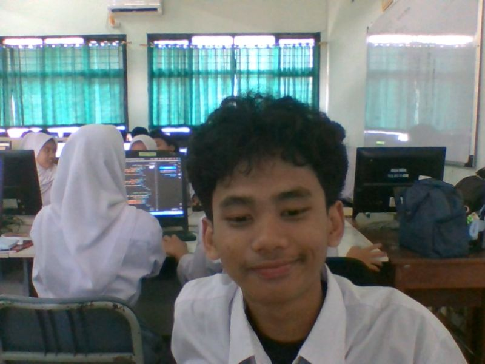

SMAN 10 DEPOK
Website sederhana kelas XII.2 Teknik untuk menyimpan informasi sekolah, kelas, biodata, dan berbagai kegiatan.
01 — SEKOLAH
SMA Negeri 10 Depok merupakan sekolah menengah atas negeri yang menjadi tempat siswa belajar, berkembang, berprestasi, dan mempersiapkan masa depan.
Jl. Raya Curug RT.01/RW.06, Curug, Kecamatan Bojongsari, Kota Depok, Jawa Barat 16517.
Lihat lokasi →VISI
MISI / NILAI UTAMA
02 — PROFIL KELAS
Kelas XII.2 Teknik menjadi tempat berkumpulnya siswa untuk belajar, bekerja sama, dan membuat kenangan selama masa sekolah.
Wali Kelas XII.2 Teknik
03 — BIODATA

SISWA XII.2 TEKNIK
Halo, saya Muhammad Ardha Al Fattah. Saya merupakan siswa kelas XII.2 Teknik SMA Negeri 10 Depok.
04 — KEGIATAN
Tempat untuk menambahkan foto dan cerita kegiatan.
Tempat untuk menambahkan dokumentasi kegiatan sekolah.
Tempat untuk menyimpan momen bersama teman.